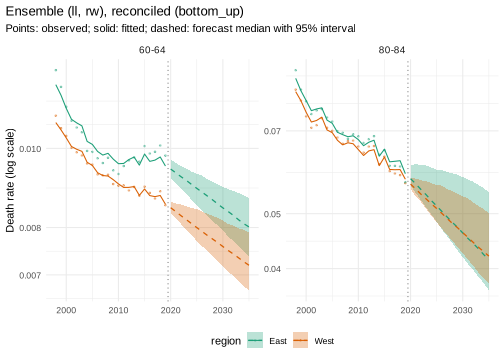
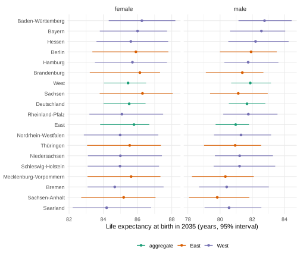
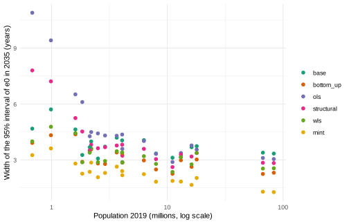
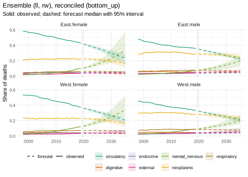

This vignette is precomputed
(dev/precompute-vignettes.R) because its backtests take
several minutes.
Regional mortality forecasts are usually needed at several levels at once: for each region and sex, for groups of regions, for the country, and often by cause of death. Forecasts made separately for each of these strata do not add up, and many cells of small regions hold few deaths. This vignette works through both problems with deaths in the 16 German Laender, 1998-2019 (the years before the COVID-19 pandemic):
- preparation: reading the published tables, estimating cells that the source suppresses, and choosing age groups, regions and cause groups;
- coherent all-cause forecasts for Laender, East and West Germany and Germany, by sex;
- cause-specific forecasts at ages 50 and over, where sparse cells need pooling or smoothing.
Every step uses general functions; nothing is specific to Germany or to regions. The same steps apply to districts, deprivation quintiles or ethnic groups: a region is one aggregation layer among others.
Data
de_deaths holds deaths by year, Land, sex, age group and
ICD-10 chapter from the cause-of-death statistics of the Federal
Statistical Office (Destatis), published by the Federal Health
Monitoring (GBE-Bund), with the national total as
region = "Deutschland". de_population holds
the populations on 31 December by single year of age (GENESIS-Online,
table 12411-0013). Both are licensed under the Datenlizenz Deutschland -
Namensnennung - Version 2.0.
head(de_deaths)
#> year region sex age cause deaths
#> 1 1998 Baden-Württemberg female Unter 1 Jahr A00-B99 NA
#> 2 1998 Baden-Württemberg female Unter 1 Jahr C00-D48 0
#> 3 1998 Baden-Württemberg female Unter 1 Jahr D50-D90 0
#> 4 1998 Baden-Württemberg female Unter 1 Jahr E00-E90 4
#> 5 1998 Baden-Württemberg female Unter 1 Jahr F00-F99 0
#> 6 1998 Baden-Württemberg female Unter 1 Jahr G00-H95 NA
head(de_population)
#> year region sex age population
#> 1 1997 Baden-Württemberg female unter 1 Jahr 56778
#> 2 1997 Baden-Württemberg female 1-Jährige 55821
#> 3 1997 Baden-Württemberg female 2-Jährige 54814
#> 4 1997 Baden-Württemberg female 3-Jährige 55363
#> 5 1997 Baden-Württemberg female 4-Jährige 57672
#> 6 1997 Baden-Württemberg female 5-Jährige 57879The source suppresses small counts for confidentiality (symbol
".", here NA). Suppression concerns 13% of the
cells, mostly rare chapters in small Laender:
d <- as.data.table(de_deaths)[year <= 2019]
d[, .(suppressed = round(mean(is.na(deaths)), 3)), by = .(all_causes = cause == "all")]
#> all_causes suppressed
#> 1: FALSE 0.137
#> 2: TRUE 0.002
d[cause != "all", .(suppressed = round(mean(is.na(deaths)), 3)), by = region][order(-suppressed)][1:5]
#> region suppressed
#> 1: Mecklenburg-Vorpommern 0.167
#> 2: Schleswig-Holstein 0.160
#> 3: Thüringen 0.158
#> 4: Sachsen-Anhalt 0.154
#> 5: Hamburg 0.153Preparation
Each step below is a decision of the analyst; the functions make it explicit and reproducible.
Reading. mt_data() reads both tables.
Stratum variables are region, sex and cause; the populations have no
cause and are shared by all causes. Suppressed cells are left out with a
warning.
x <- mt_data(deaths = de_deaths, population = de_population, by = c("region", "sex", "cause"))
#> Warning in ingest_obs(x, by, age, period, value, measure, age_open, missing =
#> missing, : 41396 missing deaths value(s) left out; suppressed counts can be
#> estimated with mt_fill_suppressed().
x
#> <mt_data> 646 strata by region, sex, cause, omega = 110
#> deaths mixed widths (1,5,14) 0-89, 90+; periods 1998-2024 (width 1); 272560 cells
#> population single years 0-89, 90+; periods 1997-2024 (width 1); 1549184 cells
#> grid <mt_axis: age, 91 intervals> 0 1 2 3 ... 88 89 90+
#> <mt_axis: period, 28 intervals> 1997 1998 1999 2000 ... 2022 2023 2024Exposures. The person-years at risk in year t are approximated by the mean of the populations on 31 December of years t - 1 and t. Then the years before the pandemic are kept, and the single-year exposures are summed to the age groups of the deaths (0, 1-14, 15-19, …, 85-89, 90+):
x <- mt_as_exposure(x, type = "dec31")
x <- mt_subset(x, periods = c(1998, 2019))
x <- mt_regroup(x, age = "deaths")Suppressed cells. The published totals constrain the
suppressed cells: the Laender add up to Germany and the chapters to all
causes, in every age group, sex and year.
mt_fill_suppressed() estimates the suppressed counts by
iterative proportional fitting (raking): starting values proportional to
the exposures are scaled until every published total is matched. The
estimates are marked with provenance "estimated".
h_fill <- mt_hierarchy(region = "Deutschland", cause = list(total = "all", additive = "rates"))
x <- mt_fill_suppressed(x, h_fill)
attr(x, "fill")
#> filled missing inconsistent iterations max_gap
#> 1: 33225 0 0 1959 7.975615e-07
mt_validate(x, hierarchy = h_fill)
#> <mt_validation> 3 finding(s): 0 error, 1 warning, 2 info
#> [warning] no exposure (exposure, Deutschland.female.A00-B99, Deutschland.female.C00-D48, Deutschland.female.D50-D90, Deutschland.female.E00-E90, n = 38): 38 stratum/strata without any exposure; remove them with mt_subset() or add the table
#> [info] grid coverage (exposure, all, n = 15048): grid cells not covered by observations
#> [info] hierarchy (deaths,exposure, 67 aggregate strata, n = 0): sums of parts agree with the totals within toleranceThe hierarchy states how the totals arise: deaths add up over Laender
and over causes; exposures add up over Laender and are shared by the
causes of a Land (additive = "rates").
mt_validate() confirms that the published totals and the
filled cells agree, and reports that the national population is not in
the population table (it is not needed, the national total is rebuilt
from the Laender below).
All totals are matched (largest relative gap max_gap).
The raking estimates are plausible values constrained to the totals, not
observations: they add no information about the suppressed cells beyond
the margins, and cells of small Laender with rare causes stay uncertain.
This matters little for all causes (33 suppressed cells, all at ages
1-34) and more for cause-specific forecasts in small Laender.
All causes: coherent forecasts by Land, East-West and sex
All-cause deaths of the 16 Laender are the bottom series. The national total is dropped and rebuilt as a sum, together with East and West Germany (Berlin is counted with the East) and both sexes:
xa <- mt_subset(x, cause == "all", region != "Deutschland", drop = TRUE)
laender <- unique(mt_strata(xa)$region)
east <- c("Berlin", "Brandenburg", "Mecklenburg-Vorpommern", "Sachsen", "Sachsen-Anhalt",
grep("^Th", laender, value = TRUE))
h <- mt_hierarchy(region = list(total = "Deutschland", groups = list(West = setdiff(laender, east), East = east)),
sex = "both")
xh <- mt_aggregate_strata(xa, h)
xh
#> <mt_data> 57 strata by region, sex, omega = 110
#> deaths mixed widths (1,5,14) 0-89, 90+; periods 1998-2019 (width 1); 22572 cells
#> exposure mixed widths (1,5,14) 0-89, 90+; periods 1998-2019 (width 1); 22572 cells
#> population mixed widths (1,5,14) 0-89, 90+; periods 1998-2019 (width 1); 22572 cells
#> grid <mt_axis: age, 18 intervals> 0 1-14 15-19 20-24 ... 80-84 85-89 90+
#> <mt_axis: period, 22 intervals> 1998 1999 2000 2001 ... 2017 2018 2019The hierarchy has 57 strata: 32 bottom series (Land by sex) and their sums. Three ways to coherent forecasts are compared with a rolling-origin backtest (origins 2008, 2011 and 2014, five years ahead):
- separate Lee-Carter models per stratum, without reconciliation (not coherent, for reference);
- separate Lee-Carter models, reconciled by weighted least squares
(
reconciled(..., method = "wls")); - a joint Li-Lee model with a common trend per sex, aggregated bottom-up;
- an equal-weight ensemble of that Li-Lee model and random walks with
drift observed with noise (
rwd(observation_noise = TRUE)), aggregated bottom-up. The plain random walk is not used here: in small Laender its year-to-year changes are mostly Poisson noise, and over 15 years its paths reach impossible rates (mt_forecast()warns about that).
lev <- mt_strata(xh, h)[, .(label, level)]
specs <- list(
"Lee-Carter, separate" = lee_carter(),
"Lee-Carter, WLS" = reconciled(lee_carter(), h, method = "wls"),
"Li-Lee, bottom-up" = reconciled(li_lee(common_by = "sex"), h, method = "bottom_up"),
"Ensemble, bottom-up" = reconciled(ensemble(ll = li_lee(common_by = "sex"), rw = rwd(observation_noise = TRUE)),
h, method = "bottom_up"))
bt <- rbindlist(lapply(names(specs), function(n) {
b <- mt_backtest(specs[[n]], xh, origins = c(2008, 2011, 2014), h = 5, n_draws = 300)
merge(b, lev, by = "label")[, spec := n]
}))
bt[, .(crps_bottom = mean(crps[level == "bottom"]), crps_aggregate = mean(crps[level != "bottom"]),
crps_bremen_saarland = mean(crps[level == "bottom" & region %in% c("Bremen", "Saarland")]),
cov95_bottom = mean(cov95[level == "bottom"]), cov95_aggregate = mean(cov95[level != "bottom"])),
by = spec][, lapply(.SD, function(v) if (is.numeric(v)) round(v, 3) else v)]
#> spec crps_bottom crps_aggregate crps_bremen_saarland
#> 1: Lee-Carter, separate 0.091 0.065 0.133
#> 2: Lee-Carter, WLS 0.092 0.066 0.133
#> 3: Li-Lee, bottom-up 0.089 0.064 0.137
#> 4: Ensemble, bottom-up 0.088 0.061 0.134
#> cov95_bottom cov95_aggregate
#> 1: 0.820 0.782
#> 2: 0.818 0.716
#> 3: 0.855 0.760
#> 4: 0.903 0.803CRPS is the continuous ranked probability score of the log death rate
per age group and year (lower is better); cov95 is the
share of observed rates inside the 95% intervals (target 0.95). Pooling
the Laender of one sex into a common trend (Li-Lee) is more accurate
than separate models, and the ensemble with random walks is the most
accurate and the best calibrated. Differences of a few thousandths in
CRPS are small against the variation between origins and strata; the
ensemble is preferred mainly for its coverage. All models are too narrow
for the aggregates, as single models usually are on real data, where
trends change; the ensemble comes closest to nominal coverage.
Forecasts
The ensemble is fitted to all years and forecast to 2035:
fit <- mt_fit(specs[["Ensemble, bottom-up"]], xh)
fc <- mt_forecast(fit, to = 2035, n_draws = 1000, seed = 1)Life expectancy at birth is computed path by path. The smallest Laender have the widest intervals:
e0 <- life_expectancy(fc, at = 0)
e0[region %in% c("Deutschland", "West", "East", "Bremen", "Saarland") & sex == "both" & period %in% c(2020, 2035),
.(region, period, q0.025 = round(q0.025, 1), q0.5 = round(q0.5, 1), q0.975 = round(q0.975, 1))]
#> region period q0.025 q0.5 q0.975
#> 1: Bremen 2020 80.3 80.7 81.2
#> 2: Bremen 2035 81.3 82.7 84.6
#> 3: Saarland 2020 80.0 80.4 80.8
#> 4: Saarland 2035 81.1 82.5 84.1
#> 5: West 2020 81.4 81.5 81.7
#> 6: West 2035 82.5 83.7 84.8
#> 7: East 2020 80.7 80.9 81.1
#> 8: East 2035 81.8 83.5 84.2
#> 9: Deutschland 2020 81.2 81.4 81.6
#> 10: Deutschland 2035 82.4 83.6 84.6mt_contrast() computes the East-West gap path by path,
so its interval includes the joint uncertainty of both regions:
gap <- mt_contrast(fc, var = "region", ref = "West", at = 0)
gap[level == "East" & period %in% c(2020, 2035),
.(sex, period, q0.025 = round(q0.025, 2), q0.5 = round(q0.5, 2), q0.975 = round(q0.975, 2), p_positive)]
#> sex period q0.025 q0.5 q0.975 p_positive
#> 1: female 2020 -0.31 0.00 0.29 0.498
#> 2: female 2035 -0.70 0.20 1.38 0.637
#> 3: male 2020 -1.41 -1.16 -0.91 0.000
#> 4: male 2035 -1.86 -0.91 0.12 0.040
#> 5: both 2020 -0.83 -0.61 -0.41 0.000
#> 6: both 2035 -1.06 -0.40 0.57 0.233
mt_plot_forecast(fc, ages = c("60-64", "80-84"), strata = c("East.both", "West.both"))
Forecasts for every Land
Life expectancy at birth in 2035 for each Land, from the ensemble, next to the observed value of 2019:
e0_obs <- life_expectancy(xh)[period == 2019, .(region, sex, observed_2019 = round(q0.5, 1))]
e0_l <- merge(e0[period == 2035, .(region, sex, q0.025 = round(q0.025, 1), q0.5 = round(q0.5, 1),
q0.975 = round(q0.975, 1))], e0_obs, by = c("region", "sex"))
e0_l[sex == "both"][order(-q0.5), .(region, observed_2019, q0.025, q0.5, q0.975)]
#> region observed_2019 q0.025 q0.5 q0.975
#> 1: Baden-Württemberg 82.1 83.3 84.6 85.8
#> 2: Bayern 81.9 82.4 84.3 85.8
#> 3: Hessen 81.6 82.5 84.0 85.3
#> 4: Berlin 81.3 82.2 83.9 85.2
#> 5: Hamburg 81.4 82.4 83.9 85.0
#> 6: Brandenburg 80.9 81.4 83.7 84.7
#> 7: Sachsen 81.1 82.0 83.7 85.2
#> 8: West 81.3 82.5 83.7 84.8
#> 9: Deutschland 81.2 82.4 83.6 84.6
#> 10: East 80.7 81.8 83.5 84.2
#> 11: Rheinland-Pfalz 81.1 81.9 83.5 85.4
#> 12: Nordrhein-Westfalen 80.8 81.6 83.3 84.8
#> 13: Thüringen 80.5 81.2 83.3 84.4
#> 14: Niedersachsen 80.8 81.7 83.1 84.7
#> 15: Schleswig-Holstein 80.8 81.8 83.1 84.7
#> 16: Mecklenburg-Vorpommern 80.1 80.9 83.0 84.4
#> 17: Bremen 80.5 81.3 82.7 84.6
#> 18: Sachsen-Anhalt 79.8 80.7 82.6 84.1
#> 19: Saarland 80.1 81.1 82.5 84.1
library(ggplot2)
pl <- e0[period == 2035 & sex != "both"]
pl[, part := fifelse(region %in% east, "East", fifelse(region %in% c("East", "West", "Deutschland"),
"aggregate", "West"))]
ord <- e0[period == 2035 & sex == "both"][order(q0.5), region]
ggplot(pl, aes(q0.5, factor(region, ord), colour = part)) +
geom_pointrange(aes(xmin = q0.025, xmax = q0.975), size = 0.2) +
facet_wrap(~ sex, scales = "free_x") +
scale_colour_mortensor(type = "categorical") +
labs(x = "Life expectancy at birth in 2035 (years, 95% interval)", y = NULL, colour = NULL) +
theme_mortensor()
The intervals of the Laender are wider than those of East, West and Germany, and widest for the small Laender (Bremen, Saarland). They are coherent with the aggregates path by path: the deaths of the Laender add up to the deaths of Germany in every draw.
How reconciliation methods change the forecasts of the Laender
The backtest above compared models. To see what the reconciliation
itself does, one set of base forecasts (Lee-Carter per stratum, for all
57 strata) is reconciled with each method by
mt_reconcile(); differences between the methods then come
from the reconciliation alone:
fc_lc <- mt_forecast(mt_fit(lee_carter(), xh), to = 2035, n_draws = 1000, seed = 1)
methods <- c("bottom_up", "ols", "structural", "wls", "mint")
rec <- c(list(base = fc_lc),
lapply(setNames(methods, methods), function(m) mt_reconcile(fc_lc, h, method = m, seed = 1)))
#> Warning in reconcile_array(arr, hs, h$additive, method, shrink, exposure %||% :
#> In 89% of the draws some bottom forecasts were set to zero to keep the
#> aggregates; their distributions are truncated. Check the base forecasts
#> (mt_coherence()) or use method = "proportional" with fixed nodes.
#> Warning in reconcile_array(arr, hs, h$additive, method, shrink, exposure %||% :
#> In 60% of the draws some bottom forecasts were set to zero to keep the
#> aggregates; their distributions are truncated. Check the base forecasts
#> (mt_coherence()) or use method = "proportional" with fixed nodes.
#> Warning in reconcile_array(arr, hs, h$additive, method, shrink, exposure %||% :
#> In 8% of the draws some bottom forecasts were set to zero to keep the
#> aggregates; their distributions are truncated. Check the base forecasts
#> (mt_coherence()) or use method = "proportional" with fixed nodes.
e0m <- rbindlist(lapply(names(rec), function(m) life_expectancy(rec[[m]], at = 0)[period == 2035][, method := m]))
e0m[, method := factor(method, c("base", methods))]
show <- c("Bremen", "Saarland", "Hamburg", "Sachsen", "Bayern", "Nordrhein-Westfalen", "East", "West",
"Deutschland")
med <- dcast(e0m[sex == "both" & region %in% show, .(region, method, e0 = round(q0.5, 2))], region ~ method,
value.var = "e0")
wid <- dcast(e0m[sex == "both" & region %in% show, .(region, method, width = round(q0.975 - q0.025, 1))],
region ~ method, value.var = "width")
med[match(show, region)]
#> region base bottom_up ols structural wls mint
#> 1: Bremen 82.42 82.42 82.64 82.51 82.35 82.30
#> 2: Saarland 82.16 82.30 82.46 82.33 82.22 82.34
#> 3: Hamburg 83.70 83.90 83.84 83.83 83.80 83.62
#> 4: Sachsen 83.62 83.78 83.66 83.69 83.68 83.72
#> 5: Bayern 84.32 84.41 84.36 84.38 84.38 84.36
#> 6: Nordrhein-Westfalen 82.97 83.09 83.05 83.07 83.07 83.16
#> 7: East 83.32 83.60 83.46 83.52 83.53 83.41
#> 8: West 83.56 83.60 83.53 83.54 83.54 83.60
#> 9: Deutschland 83.48 83.57 83.49 83.50 83.51 83.58
wid[match(show, region)]
#> region base bottom_up ols structural wls mint
#> 1: Bremen 4.7 3.9 10.9 7.8 4.0 3.3
#> 2: Saarland 5.7 4.3 9.4 7.2 4.8 3.6
#> 3: Hamburg 3.3 2.9 6.1 4.5 2.9 2.3
#> 4: Sachsen 4.0 3.3 4.4 3.8 3.4 2.4
#> 5: Bayern 3.2 3.0 3.4 3.3 3.1 1.8
#> 6: Nordrhein-Westfalen 3.7 3.0 3.6 3.4 3.4 2.0
#> 7: East 3.7 2.6 3.8 3.2 2.8 1.7
#> 8: West 3.4 2.2 3.1 2.8 2.5 1.3
#> 9: Deutschland 3.3 2.3 3.0 2.8 2.6 1.3The first table holds the medians, the second the widths of the 95% intervals (years), for both sexes; note that “both sexes” of a Land is itself an aggregate (the sum of women and men), so bottom-up changes it as well. The medians change by a few tenths of a year at most. The widths change much more, and differently for small and large Laender:
pop <- mt_obs(xh, "exposure")[period_lo == 2019, .(population = sum(value)), by = stratum]
pop <- merge(pop, mt_strata(xh)[, .(stratum, region, sex)], by = "stratum")
wd <- merge(e0m[sex == "both", .(region, method, width = q0.975 - q0.025)],
pop[sex == "both", .(region, population)], by = "region")
ggplot(wd, aes(population / 1e6, width, colour = method)) +
geom_point(size = 2) +
scale_x_log10() +
scale_colour_mortensor(type = "categorical") +
labs(x = "Population 2019 (millions, log scale)", y = "Width of the 95% interval of e0 in 2035 (years)",
colour = NULL) +
theme_mortensor(legend = "right")
- OLS distributes the adjustment equally over all strata in deaths. An adjustment of a few hundred deaths is small for Nordrhein-Westfalen and large for Bremen, so the intervals of the small Laender widen most. In 89% of the draws it would make the deaths of some strata negative; they are held at zero (the warnings above), which truncates their distributions.
- Structural weights widen the small Laender less than OLS (strata held at zero in 60% of the draws).
- WLS (weights from the variance of each stratum’s draws) keeps the intervals of the Laender close to those of their own models and narrows the aggregates towards the sums of the Laender.
- Bottom-up keeps the Laender of each sex as forecast and replaces all aggregates by sums.
- MinT uses the covariance between the strata and gives the narrowest intervals at every level (strata held at zero in 8% of the draws, WLS 4%).
Narrower intervals are better only if they still cover the observations. The backtest of all methods with the same base model (origins 2008, 2011, 2014, five years ahead):
specs_m <- setNames(lapply(c("bottom_up", "ols", "structural", "mint"), function(m) {
reconciled(lee_carter(), h, method = m)
}), paste0("Lee-Carter, ", c("bottom-up", "OLS", "structural", "MinT")))
bt_m <- rbindlist(lapply(names(specs_m), function(n) {
b <- mt_backtest(specs_m[[n]], xh, origins = c(2008, 2011, 2014), h = 5, n_draws = 300)
merge(b, lev, by = "label")[, spec := n]
}))
#> Warning in reconcile_array(arr, rc$structure, rc$hierarchy$additive, rc$method,
#> : In 43% of the draws some bottom forecasts were set to zero to keep the
#> aggregates; their distributions are truncated. Check the base forecasts
#> (mt_coherence()) or use method = "proportional" with fixed nodes.
#> Warning in reconcile_array(arr, rc$structure, rc$hierarchy$additive, rc$method,
#> : In 34% of the draws some bottom forecasts were set to zero to keep the
#> aggregates; their distributions are truncated. Check the base forecasts
#> (mt_coherence()) or use method = "proportional" with fixed nodes.
#> Warning in reconcile_array(arr, rc$structure, rc$hierarchy$additive, rc$method,
#> : In 34% of the draws some bottom forecasts were set to zero to keep the
#> aggregates; their distributions are truncated. Check the base forecasts
#> (mt_coherence()) or use method = "proportional" with fixed nodes.
#> Warning in reconcile_array(arr, rc$structure, rc$hierarchy$additive, rc$method,
#> : In 14% of the draws some bottom forecasts were set to zero to keep the
#> aggregates; their distributions are truncated. Check the base forecasts
#> (mt_coherence()) or use method = "proportional" with fixed nodes.
#> Warning in reconcile_array(arr, rc$structure, rc$hierarchy$additive, rc$method,
#> : In 15% of the draws some bottom forecasts were set to zero to keep the
#> aggregates; their distributions are truncated. Check the base forecasts
#> (mt_coherence()) or use method = "proportional" with fixed nodes.
#> Warning in reconcile_array(arr, rc$structure, rc$hierarchy$additive, rc$method,
#> : In 9% of the draws some bottom forecasts were set to zero to keep the
#> aggregates; their distributions are truncated. Check the base forecasts
#> (mt_coherence()) or use method = "proportional" with fixed nodes.
bt_m <- rbind(bt[spec %in% c("Lee-Carter, separate", "Lee-Carter, WLS")], bt_m)
bt_m[, .(crps_bottom = mean(crps[level == "bottom"]), crps_aggregate = mean(crps[level != "bottom"]),
crps_bremen_saarland = mean(crps[level == "bottom" & region %in% c("Bremen", "Saarland")]),
cov95_bottom = mean(cov95[level == "bottom"]), cov95_aggregate = mean(cov95[level != "bottom"])),
by = spec][, lapply(.SD, function(v) if (is.numeric(v)) round(v, 3) else v)]
#> spec crps_bottom crps_aggregate crps_bremen_saarland
#> 1: Lee-Carter, separate 0.091 0.065 0.133
#> 2: Lee-Carter, WLS 0.092 0.066 0.133
#> 3: Lee-Carter, bottom-up 0.091 0.065 0.133
#> 4: Lee-Carter, OLS 0.094 0.067 0.144
#> 5: Lee-Carter, structural 0.093 0.067 0.139
#> 6: Lee-Carter, MinT 0.092 0.066 0.135
#> cov95_bottom cov95_aggregate
#> 1: 0.820 0.782
#> 2: 0.818 0.716
#> 3: 0.817 0.717
#> 4: 0.869 0.757
#> 5: 0.843 0.733
#> 6: 0.777 0.669In accuracy the methods differ little for the Laender overall and most for the small Laender. OLS and structural weights, which move Bremen and Saarland most, make their forecasts less accurate (CRPS 0.144 and 0.139 against 0.133) and wider (95% coverage of the Laender 0.87 and 0.84). Bottom-up and WLS keep the accuracy of the separate models. MinT gives the narrowest intervals and the lowest coverage at both levels (0.78 and 0.67). Every reconciliation covers the aggregates less often than the separate models of the aggregates (0.78), as in the vignette “Coherent forecasts: what reconciliation changes” on the ONS data. The pooled model and the ensemble of the first backtest, aggregated bottom-up, are more accurate and better calibrated than any reconciliation of separate Lee-Carter models: on these data, the choice of the model matters more than the choice of the reconciliation method.
Causes of death at ages 50 and over
Cause groups. Deaths by ICD-10 chapter are sparse in
small Laender. de_cause_groups keeps the large chapters
(neoplasms, circulatory, respiratory, digestive diseases, endocrine
diseases, external causes) and combines mental and nervous system
disorders, because dementia is coded in both chapters and the coding
shifted between them over time. All other chapters form the rest, the
total minus the groups. The analysis starts at age 50, where most groups
have enough deaths.
de_cause_groups
#> $neoplasms
#> [1] "C00-D48"
#>
#> $circulatory
#> [1] "I00-I99"
#>
#> $respiratory
#> [1] "J00-J99"
#>
#> $digestive
#> [1] "K00-K93"
#>
#> $mental_nervous
#> [1] "F00-F99" "G00-H95"
#>
#> $endocrine
#> [1] "E00-E90"
#>
#> $external
#> [1] "S00-T98"
xc <- mt_subset(x, region != "Deutschland", ages = c(50, Inf))
xc <- mt_group_levels(xc, "cause", de_cause_groups, other = "rest", total = "all", additive = "rates")
xc
#> <mt_data> 288 strata by region, sex, cause, omega = 110
#> deaths 5-year groups 50-89, 90+; periods 1998-2019 (width 1); 57024 cells
#> exposure 5-year groups 50-89, 90+; periods 1998-2019 (width 1); 57024 cells
#> population 5-year groups 50-89, 90+; periods 1998-2019 (width 1); 57024 cells
#> grid <mt_axis: age, 9 intervals> 50-54 55-59 60-64 65-69 ... 80-84 85-89 90+
#> <mt_axis: period, 22 intervals> 1998 1999 2000 2001 ... 2017 2018 2019The cause-specific forecasts are wanted for the Laender, for East and West Germany and for Germany. One hierarchy crosses both aggregation layers: deaths add up over Laender and over causes, exposures over Laender only.
hc <- mt_hierarchy(region = list(total = "Deutschland", groups = list(West = setdiff(laender, east), East = east)),
cause = list(total = "all", additive = "rates"))
xcc <- mt_aggregate_strata(xc, hc)
xcc
#> <mt_data> 342 strata by region, sex, cause, omega = 110
#> deaths 5-year groups 50-89, 90+; periods 1998-2019 (width 1); 67716 cells
#> exposure 5-year groups 50-89, 90+; periods 1998-2019 (width 1); 67716 cells
#> population 5-year groups 50-89, 90+; periods 1998-2019 (width 1); 67716 cells
#> grid <mt_axis: age, 9 intervals> 50-54 55-59 60-64 65-69 ... 80-84 85-89 90+
#> <mt_axis: period, 22 intervals> 1998 1999 2000 2001 ... 2017 2018 2019
mt_validate(xcc, hierarchy = hc)
#> <mt_validation> 1 finding(s): 0 error, 0 warning, 1 info
#> [info] hierarchy (deaths,exposure, 86 aggregate strata, n = 0): sums of parts agree with the totals within toleranceCauses share the population of their stratum, so their rates add up to the all-cause rate.
Sparse cells. The share of cells with fewer than 5 deaths, by cause group, in the two smallest Laender and in all others:
o <- mt_obs(xc)
o[, .(cells_below_5 = round(mean(value < 5), 3)), by = .(cause, bremen_saarland = region %in% c("Bremen", "Saarland"))][
, dcast(.SD, cause ~ bremen_saarland, value.var = "cells_below_5")]
#> cause FALSE TRUE
#> 1: all 0.000 0.000
#> 2: circulatory 0.000 0.000
#> 3: digestive 0.000 0.020
#> 4: endocrine 0.021 0.199
#> 5: external 0.001 0.144
#> 6: mental_nervous 0.004 0.098
#> 7: neoplasms 0.000 0.000
#> 8: respiratory 0.008 0.057
#> 9: rest 0.001 0.024Two remedies are compared: pooling, by a joint Li-Lee model with a common trend per sex and cause (the Laender deviate from it with stationary factors), and smoothing, by Whittaker smoothing of the log rates over age before fitting (a preprocessing step, so in the backtest it sees only the training years). Forecasts of the causes are summed bottom-up to all causes, which keeps them coherent.
smooth <- mt_prep(step_smooth(method = "whittaker"))
levc <- mt_strata(xcc, hc)[, .(label, level)]
specs_c <- list(
"Lee-Carter" = list(reconciled(lee_carter(), hc, method = "bottom_up"), NULL),
"Li-Lee" = list(reconciled(li_lee(common_by = c("sex", "cause")), hc, method = "bottom_up"), NULL),
"Li-Lee, smoothed" = list(reconciled(li_lee(common_by = c("sex", "cause")), hc, method = "bottom_up"), smooth),
"Ensemble, smoothed" = list(reconciled(ensemble(ll = li_lee(common_by = c("sex", "cause")),
rw = rwd(observation_noise = TRUE)), hc, method = "bottom_up"),
smooth))
btc <- rbindlist(lapply(names(specs_c), function(n) {
b <- mt_backtest(specs_c[[n]][[1]], xcc, origins = c(2008, 2011, 2014), h = 5, n_draws = 300,
prep = specs_c[[n]][[2]])
merge(b, levc, by = "label")[, spec := n]
}))
#> Warning in check_draws_plausible(arr, fit$age, fit$strata, spec$label):
#> Lee-Carter: forecast death rates above 1 in 53.3% of the draws (strata
#> Bremen.female.respiratory, Bremen.female.mental_nervous, Bremen.male.digestive;
#> ages 50-54, 85-89, 90+). The model is unstable here, often because of sparse
#> counts or a steep trend extrapolated far ahead; consider wider age groups
#> (mt_regroup()), pooling (li_lee(common_by = )), smoothing (step_smooth()) or an
#> ensemble.
#> Warning in check_draws_plausible(arr, fit$age, fit$strata, spec$label):
#> Lee-Carter: forecast death rates above 1 in 24.3% of the draws (strata
#> Bremen.female.mental_nervous, Bremen.male.mental_nervous, Bremen.male.external;
#> ages 80-84, 85-89, 90+). The model is unstable here, often because of sparse
#> counts or a steep trend extrapolated far ahead; consider wider age groups
#> (mt_regroup()), pooling (li_lee(common_by = )), smoothing (step_smooth()) or an
#> ensemble.
#> Warning in check_draws_plausible(arr, fit$age, fit$strata, spec$label):
#> Lee-Carter: forecast death rates above 1 in 14.7% of the draws (strata
#> Bremen.female.mental_nervous, Bremen.male.mental_nervous, Bremen.male.external;
#> ages 85-89, 90+). The model is unstable here, often because of sparse counts or
#> a steep trend extrapolated far ahead; consider wider age groups (mt_regroup()),
#> pooling (li_lee(common_by = )), smoothing (step_smooth()) or an ensemble.
btc[, .(crps_causes_laender = mean(crps[level == "bottom"]),
crps_causes_bremen_saarland = mean(crps[level == "bottom" & region %in% c("Bremen", "Saarland")]),
crps_germany = mean(crps[region == "Deutschland"]),
cov95_laender = mean(cov95[level == "bottom"]), cov95_germany = mean(cov95[region == "Deutschland"])),
by = spec][, lapply(.SD, function(v) if (is.numeric(v)) round(v, 3) else v)]
#> spec crps_causes_laender crps_causes_bremen_saarland
#> 1: Lee-Carter 0.133 0.198
#> 2: Li-Lee 0.125 0.184
#> 3: Li-Lee, smoothed 0.120 0.171
#> 4: Ensemble, smoothed 0.115 0.168
#> crps_germany cov95_laender cov95_germany
#> 1: 0.061 0.884 0.753
#> 2: 0.068 0.870 0.721
#> 3: 0.065 0.880 0.737
#> 4: 0.058 0.921 0.751Pooling (Li-Lee) and smoothing both improve the cause-specific forecasts of the Laender, most in the small Laender, and the ensemble with noise-robust random walks is the most accurate and the best calibrated. Separate Lee-Carter models produce implausible paths for sparse causes in Bremen (see the warnings). The national cause-specific intervals stay too narrow (95% coverage about 0.74), as for all causes. All forecasts add up: the national cause-specific forecasts are sums of the Laender, and the causes add up to all causes.
Forecasts by cause
spc <- specs_c[["Ensemble, smoothed"]][[1]]
fcc <- mt_forecast(mt_fit(spc, xcc, prep = smooth), to = 2035, n_draws = 500, seed = 2)
#> Warning in check_draws_plausible(arr, fit$age, fit$strata, spec$label): Li-Lee
#> (common by sex, cause): forecast death rates above 1 in 0.4% of the draws
#> (strata Bayern.female.mental_nervous, Bremen.female.mental_nervous; ages 90+).
#> The model is unstable here, often because of sparse counts or a steep trend
#> extrapolated far ahead; consider wider age groups (mt_regroup()), pooling
#> (li_lee(common_by = )), smoothing (step_smooth()) or an ensemble.
#> Warning in check_draws_plausible(arr, fit$age, fit$strata, spec$label): Random
#> walk with drift plus noise: forecast death rates above 1 in 43.2% of the draws
#> (strata Baden-Württemberg.female.mental_nervous, Berlin.female.mental_nervous,
#> Brandenburg.female.mental_nervous; ages 85-89, 90+). The model is unstable
#> here, often because of sparse counts or a steep trend extrapolated far ahead;
#> consider wider age groups (mt_regroup()), pooling (li_lee(common_by = )),
#> smoothing (step_smooth()) or an ensemble.Age-standardised death rates at ages 50 and over (per 100,000 of the European Standard Population 2013 aged 50 and over) in 2035, and the difference between East and West Germany by cause:
a <- asr(fcc)
a[region %in% c("Deutschland", "Bremen") & sex == "female" & period == 2035,
.(region, cause, q0.025 = round(q0.025), q0.5 = round(q0.5), q0.975 = round(q0.975))]
#> region cause q0.025 q0.5 q0.975
#> 1: Bremen neoplasms 404 466 534
#> 2: Bremen circulatory 346 463 570
#> 3: Bremen respiratory 122 194 677
#> 4: Bremen digestive 43 73 129
#> 5: Bremen mental_nervous 107 638 4811
#> 6: Bremen endocrine 35 67 200
#> 7: Bremen external 36 60 222
#> 8: Bremen all 1761 2446 6482
#> 9: Bremen rest 172 332 671
#> 10: Deutschland neoplasms 418 435 458
#> 11: Deutschland circulatory 417 491 575
#> 12: Deutschland respiratory 128 156 202
#> 13: Deutschland digestive 61 71 79
#> 14: Deutschland mental_nervous 540 793 1650
#> 15: Deutschland endocrine 66 86 167
#> 16: Deutschland external 73 94 150
#> 17: Deutschland rest 210 256 346
#> 18: Deutschland all 2054 2424 3375
d <- mt_contrast(fcc, var = "region", ref = "West", quantity = "asr")
d[level == "East" & period == 2035,
.(sex, cause, q0.025 = round(q0.025), q0.5 = round(q0.5), q0.975 = round(q0.975), p_positive)]
#> sex cause q0.025 q0.5 q0.975 p_positive
#> 1: female neoplasms -38 -11 14 0.238
#> 2: male neoplasms 14 62 115 0.994
#> 3: female circulatory -35 53 151 0.902
#> 4: male circulatory -20 91 185 0.948
#> 5: female respiratory -65 -28 -4 0.020
#> 6: male respiratory -71 -13 25 0.274
#> 7: female digestive -13 -1 8 0.430
#> 8: male digestive 9 22 34 1.000
#> 9: female mental_nervous -801 -19 1401 0.464
#> 10: male mental_nervous -378 35 414 0.556
#> 11: female endocrine -101 15 70 0.726
#> 12: male endocrine -216 10 49 0.620
#> 13: female external -70 6 53 0.588
#> 14: male external -32 30 75 0.904
#> 15: female rest -174 -43 95 0.240
#> 16: male rest -229 -49 138 0.256
#> 17: female all -833 -28 1352 0.438
#> 18: male all -488 166 578 0.784
mt_plot_shares(fcc, groups = c("West.female", "East.female", "West.male", "East.male"),
causes = names(de_cause_groups))
The intervals of Bremen are wider than those of Germany, as they should be: pooling borrows strength for the trend, but the variation of deaths in a small population remains.
The group of mental and nervous system disorders stands out: its
intervals for 2035 are very wide, and they widen the all-cause intervals
of the bottom-up sums. Deaths in this group rose steeply between 1998
and 2019, partly because dementia was increasingly coded as the
underlying cause. Extrapolating that trend over 16 years is uncertain,
and the forecast says so. The random walk component of the ensemble
extrapolates the rise in each Land, and 43% of its draws reach death
rates above 1 at ages 85 and over by 2035 (the warning above): the upper
ends of these intervals are not plausible. For such causes, a shorter
horizon or a fitting period that starts after the coding changes
(step_window(), compared in a backtest) is more defensible
than a long extrapolation; the gaps between East and West Germany by
cause are better determined than the levels.
What the causes imply for all causes
Summed bottom-up, the cause forecasts also forecast all causes. Over
16 years their sum is dominated by the causes that fall slowest or rise,
so forecasts by cause tend to be more pessimistic than forecasts of all
causes (Wilmoth 1995). The remedy is to keep the all-cause forecast of
each Land and scale its causes to it, draw by draw, in proportion to the
cause forecasts (method = "proportional" with the all-cause
strata of the Laender as fixed nodes); the national figures
remain sums of the Laender. The all-cause forecasts come from the same
ensemble, fitted to the all-cause strata:
fixed_all <- mt_strata(xcc)[cause == "all" & region %in% laender, label]
spc_fx <- reconciled(ensemble(ll = li_lee(common_by = c("sex", "cause")), rw = rwd(observation_noise = TRUE)),
hc, method = "proportional", fixed = fixed_all)
fcx <- mt_forecast(mt_fit(spc_fx, xcc, prep = smooth), to = 2035, n_draws = 500, seed = 2)
#> Warning in check_draws_plausible(arr, fit$age, fit$strata, spec$label): Li-Lee
#> (common by sex, cause): forecast death rates above 1 in 0.4% of the draws
#> (strata Bayern.female.mental_nervous, Bremen.female.mental_nervous; ages 90+).
#> The model is unstable here, often because of sparse counts or a steep trend
#> extrapolated far ahead; consider wider age groups (mt_regroup()), pooling
#> (li_lee(common_by = )), smoothing (step_smooth()) or an ensemble.
#> Warning in check_draws_plausible(arr, fit$age, fit$strata, spec$label): Random
#> walk with drift plus noise: forecast death rates above 1 in 43.2% of the draws
#> (strata Baden-Württemberg.female.mental_nervous, Berlin.female.mental_nervous,
#> Brandenburg.female.mental_nervous; ages 85-89, 90+). The model is unstable
#> here, often because of sparse counts or a steep trend extrapolated far ahead;
#> consider wider age groups (mt_regroup()), pooling (li_lee(common_by = )),
#> smoothing (step_smooth()) or an ensemble.
show <- function(f, approach) {
a <- asr(f)[region == "Deutschland" & cause %in% c("all", "mental_nervous") & period == 2035]
e <- life_expectancy(f, at = 50)[region == "Deutschland" & cause == "all" & period == 2035]
rbind(a[, .(sex, quantity = paste("ASR", cause), approach, value = sprintf("%.0f (%.0f-%.0f)", q0.5, q0.025,
q0.975))],
e[, .(sex, quantity = "e50 all", approach, value = sprintf("%.1f (%.1f-%.1f)", q0.5, q0.025, q0.975))])
}
obs <- rbind(asr(xcc)[region == "Deutschland" & cause %in% c("all", "mental_nervous") & period == 2019,
.(sex, quantity = paste("ASR", cause), observed_2019 = sprintf("%.0f", q0.5))],
life_expectancy(xcc, at = 50)[region == "Deutschland" & cause == "all" & period == 2019,
.(sex, quantity = "e50 all", observed_2019 = sprintf("%.1f", q0.5))])
merge(obs, dcast(rbind(show(fcc, "causes summed"), show(fcx, "causes scaled to all causes")),
sex + quantity ~ approach, value.var = "value"), by = c("sex", "quantity"))
#> sex quantity observed_2019 causes scaled to all causes
#> 1: female ASR all 2037 1722 (1471-2046)
#> 2: female ASR mental_nervous 222 505 (371-671)
#> 3: female e50 all 34.7 36.2 (34.7-37.6)
#> 4: male ASR all 2969 2405 (2134-2790)
#> 5: male ASR mental_nervous 256 491 (347-632)
#> 6: male e50 all 30.6 32.9 (31.4-34.1)
#> causes summed
#> 1: 2424 (2054-3375)
#> 2: 793 (540-1650)
#> 3: 34.2 (33.0-35.0)
#> 4: 3000 (2594-3625)
#> 5: 649 (425-964)
#> 6: 31.4 (30.2-32.3)Summed bottom-up, the cause forecasts raise the national all-cause rate of women at 50+ from 2037 per 100,000 in 2019 to 2424 in 2035, and their life expectancy at 50 falls from 34.7 to 34.2 years; for men the rate stays at its level of 2019 and life expectancy at 50 rises by 0.8 years. The rise of the mental and nervous group (from 222 to 793 for women), partly a coding shift, is larger than the whole all-cause rise. Scaled to the all-cause forecasts of the Laender, the all-cause rate falls (women 1722, men 2405) and life expectancy at 50 rises to 36.2 and 32.9 years. The causes keep their forecast composition, so the mental and nervous group still more than doubles (505). For a horizon of 16 years the scaled forecasts are the more defensible choice; the level of each cause remains conditional on the extrapolated composition, and a five-year backtest says little about which approach is closer over 16 years. Report which one is used.
Summary of the decisions
| Step | Decision here | Function |
|---|---|---|
| Exposure | mean of 31 December populations | mt_as_exposure(type = "dec31") |
| Period | 1998-2019, before the pandemic | mt_subset(periods = ) |
| Age groups | age groups of the deaths; causes from 50 |
mt_regroup(age = "deaths"),
mt_subset(ages = )
|
| Suppressed cells | raking to Land and national totals | mt_fill_suppressed() |
| Aggregation layers | East and West; cause groups and rest |
mt_hierarchy(region = list(total = , groups = )),
mt_group_levels()
|
| Shared exposures | causes share the population of their Land | mt_hierarchy(cause = list(total = "all", additive = "rates")) |
| Sparse cells | pooling and Whittaker smoothing |
li_lee(common_by = ), step_smooth()
|
| Coherence | bottom-up sums of a joint model; causes scaled to the all-cause forecast of each Land |
reconciled(),
reconciled(method = "proportional", fixed = )
|
| Calibration | ensemble with noise-robust random walks |
ensemble(),
rwd(observation_noise = TRUE)
|
References
Wilmoth JR (1995). Are mortality projections always more pessimistic when disaggregated by cause of death? Mathematical Population Studies 5(4): 293-319. doi:10.1080/08898489509525409.